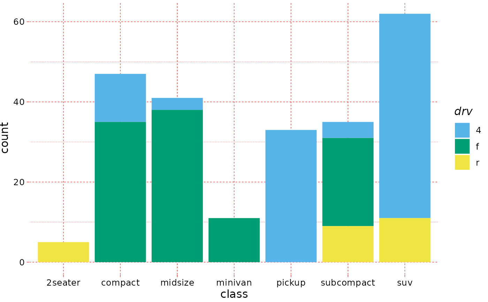

The pander ships with a default theme when the 'unify plots' option is
enabled via panderOptions, which is now also available outside of pander internals, like evals,
eval.msgs or Pandoc.brew.
Usage
theme_pander(
base_size = 12,
base_family = "sans",
nomargin = TRUE,
ff = NULL,
fc = "black",
fs = NULL,
gM = TRUE,
gm = TRUE,
gc = "grey",
gl = "dashed",
boxes = FALSE,
bc = "white",
pc = "transparent",
lp = "right",
axis = 1
)Arguments
- base_size
base font size, given in pts.
- base_family
base font family
- nomargin
suppress the white space around the plot (boolean)
- ff
font family, like
sans. Deprecated: usebase_familyinstead.- fc
font color (name or hexa code)
- fs
font size (integer). Deprecated: use
base_sizeinstead.- gM
major grid (boolean)
- gm
minor grid (boolean)
- gc
grid color (name or hexa code)
- gl
grid line type (
lty)- boxes
to render a border around the plot or not
- bc
background color (name or hexa code)
- pc
panel background color (name or hexa code)
- lp
legend position
- axis
axis angle as defined in
par(les)
Examples
require("ggplot2")
if (require("pander")) {
p <- ggplot(mtcars, aes(x = mpg, y = wt)) +
geom_point()
p + theme_pander()
panderOptions("graph.grid.color", "red")
p + theme_pander()
p <- ggplot(mtcars, aes(wt, mpg, colour = factor(cyl))) +
geom_point()
p + theme_pander() + scale_color_pander()
ggplot(mpg, aes(x = class, fill = drv)) +
geom_bar() +
scale_fill_pander() +
theme_pander()
}
#> Loading required package: pander
